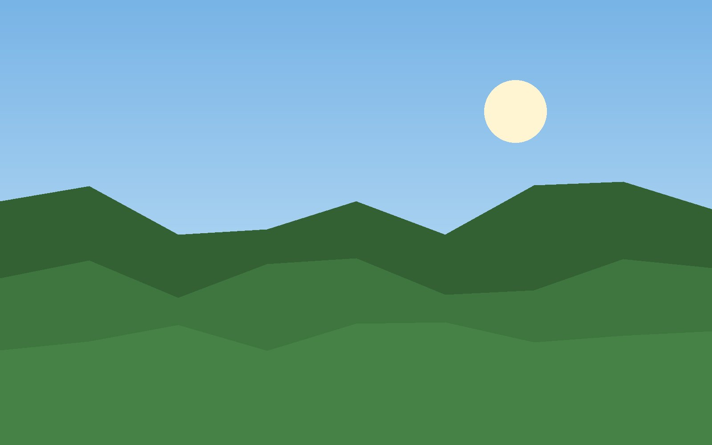
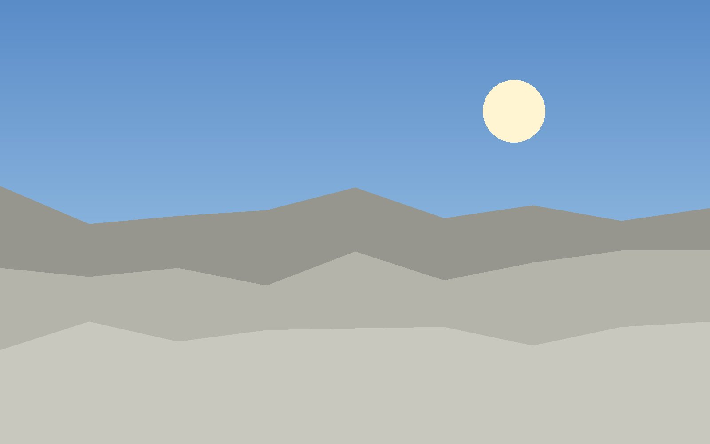

Phones and walls
Please set up a PIN before you connect a phone. Phones and tablets cannot reach Mitra Home right now: it was started for this PC only. Finish phone setup
Mitra Wall
An old tablet or iPad on the wall that shows the week, today's plan, the children's jobs, the lists and the meals. It opens Money only when an adult types their own PIN, and closes it again after a minute.
Seasonal looks
On Halloween, Diwali, Christmas, Holi, Ganesh Chaturthi, Navratri, Dussehra, Makar Sankranti, Onam, Maha Shivaratri, Ugadi, New Year, Independence Day, Independence Day, Canada Day, Thanksgiving (and the three days before) the wall's resting clock shows a drawn
backdrop and decorations. It stays still at night. To see one today, add ?season=halloween, diwali or
christmas to the clock's address.
Wall screen · every wall without its own
After two minutes untouched the wall shows a full-size clock, and in the day the family's photos in turn. At night it stays on a dark clock; red or amber makes it a bedroom clock (black, the time and date only). Click a wall above to give it its own screen, for example a bedroom clock.
Wall photos · 4 of 300


Each photo is made again on this PC: turned upright, at most 1920 pixels a side and without its location or camera details. They stay on this PC (in the household folder, wall_photos) and only a paired wall shows them.